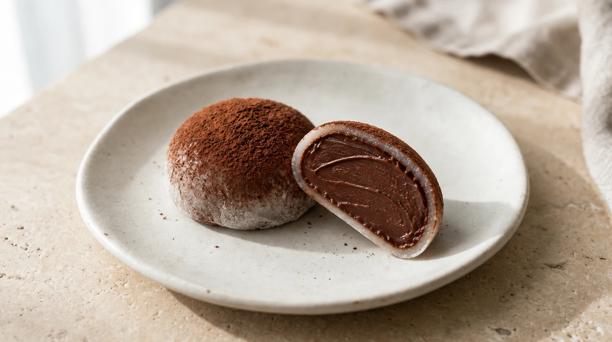
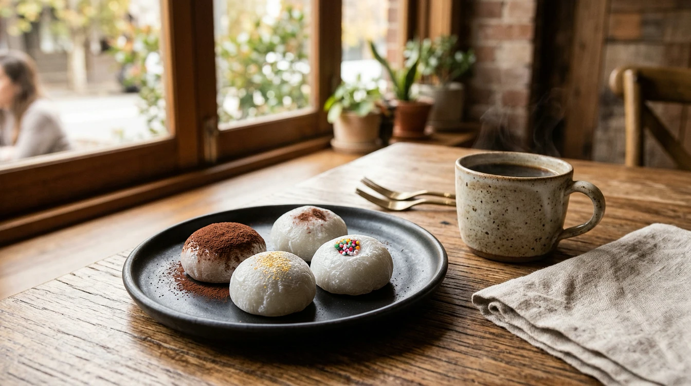

VERYGOOD JOURNAL · DESSERT ORIGINS & TEXTURE
Editorial Guide · 4 min read · Understanding Rice Cake Layers, Ganache & Chapssaltteok
No. Traditional Japanese mochi is a glutinous rice cake, while mochi ice cream combines a mochi outer layer with an ice cream centre.[1][6] A chocolate filling inside mochi can just as easily be smooth ganache rather than ice cream.[5]
If your first introduction to mochi came from a supermarket freezer cabinet, start by separating the outside from the inside. The most helpful question is not simply “Is it mochi?” but “What is in the centre?”

A closer look at the rice-cake layer and chocolate centre.
Traditional mochi is made by pounding steamed glutinous rice into a stretchy, dough-like consistency.[1] That process describes the rice cake itself, not an ice cream filling.[1][6]
Daifuku offers a familiar example of a filled Japanese sweet: sweet bean paste wrapped in soft mochi.[2] Ichigo daifuku includes a whole fresh strawberry, and variations can add whipped cream between the mochi and bean paste.[2] A filled mochi sweet therefore need not have an ice cream centre at all.[2]
Think of the outer rice layer and the inner filling as two separate parts whenever you read a product description. Ask about both—especially if you are choosing a dessert to share with someone else.
Compare two published product descriptions. Daifuku Store describes its Double Chocolate as chocolate ganache wrapped in chocolate mochi.[5] Lotte’s Yukimi Daifuku range includes vanilla ice cream wrapped in mochi, as well as a chocolate version combining chocolate ice cream, crisp chocolate, and mochi.[6]
Both examples involve a mochi exterior, yet the chocolate centres are built differently: ganache in one, ice cream in the other.[5][6] Seeing the words “chocolate mochi” is therefore never enough to assume an ice cream filling.[5][6]
Look for the actual filling name rather than guessing from a dark centre in a photograph. Ask “Is that ganache or ice cream?” whenever a description leaves you unsure. If texture matters to you, ask the maker how they describe both the centre and the rice layer—you do not need to know every confectionery term before asking.
OUTSIDE VS. INSIDE · CONCEPTUAL GUIDE
Same rice-cake concept, three different centres
EXAMPLE 01 · TRADITIONAL
Sweet Bean Paste
Glutinous rice layer around smooth or textured sweet bean paste (e.g. classic daifuku or chapssaltteok).[2][3]
EXAMPLE 02 · CONFECTIONERY
Chocolate Ganache
Stretchy rice layer surrounding a rich, velvety chocolate ganache centre.[5]
EXAMPLE 03 · FROZEN DESSERT
Ice Cream Centre
Thin mochi wrapper formed around a frozen ice cream centre for freezer storage.[6]
Illustrative filling examples, not a recipe or a product comparison.
Chapssaltteok (찹쌀떡) is a Korean glutinous rice cake; the Korea Tourism Organization describes the traditional red-bean-filled version as steamed sticky rice dough wrapped around sweet red bean paste, while also noting modern fillings such as fresh cream, sweet potato, and cheese.[3]
In Korea, tteok (떡) is a much wider rice-cake category spanning many grains, textures, and steaming or pounding methods.[4] Chapssaltteok is one specific glutinous rice cake within that tradition, not a catch-all name for every Korean rice cake.[3][4] Keeping the Korean name in view respects both traditions rather than treating Korean rice cakes and Japanese mochi as identical terms.[1][3][4]
Very Good Chocolate pairs the names Chapssaltteok and Chocolate Mochi so local readers can immediately recognise the chewy rice-cake texture while keeping the Korean name visible.
KEEP THE KOREAN NAME IN VIEW
Chapssaltteok · 찹쌀떡 · Chocolate Mochi
Pairing the Korean name Chapssaltteok (찹쌀떡) with the descriptive English phrase Chocolate Mochi helps explain the glutinous rice-cake exterior and chocolate filling without erasing its Korean culinary roots.[3][4]

Keep the Korean name in view: handcrafted chocolate chapssaltteok served alongside coffee or tea.
A quick clarification is always more reliable than trying to guess a filling from the product name alone:
WHAT TO ASK BEFORE YOU ORDER
01 · What is inside?
Ask for the specific filling to be named (such as chocolate ganache, cream, or bean paste) rather than stopping at “chocolate.”
02 · What texture should I expect?
Ask the maker to describe the chew of the outer rice layer and the softness of the centre separately.
03 · How should this particular product be stored and served?
Follow the product’s own label and maker’s instructions; never borrow storage directions from a different mochi product.
If food allergies or dietary requirements affect your choice, always read the full ingredient and allergen information and ask the supplier whenever anything is unclear.[23]
Read the filling description, keep the rice-cake name in view, and choose the combination of outer chew and inner centre that sounds most appealing to you.
EXPLORE VERYGOOD · SYDNEY
Find your next chocolate moment
Ask us about our current dessert collection in Sydney, and let us know what kind of chocolate filling and texture you are looking for.
Sources & References
[1] Japan National Tourism Organization (JNTO) — Unique Mochi Dishes from Around Japan (https://www.japan.travel/en/blog/unique-mochi-dishes-from-around-japan)
[2] Government of Japan — Wagashi: Traditional Japanese Confections (https://www.japan.go.jp/tomodachi/2016/spring-summer2016/wagashi.html)
[3] Korea Tourism Organization — Sweet Rice Cake with Red Bean Filling: Chapssaltteok (https://english.visitkorea.or.kr/svc/contents/contentsView.do?vcontsId=231667)
[4] Korea Tourism Organization — Food Items: Traditional Korean Snacks (https://english1.visitkorea.or.kr/enu/SHP/SH_ENG_3_1.jsp)
[5] Daifuku Store — Double Chocolate (https://daifuku.store/products/double-chocolate)
[6] Lotte — Yukimi Daifuku (https://www.lotte.co.jp/products/brand/yukimi)
[23] Food Standards Australia New Zealand (FSANZ) — Allergen labelling for consumers (https://www.foodstandards.gov.au/consumer/labelling/allergen-labelling)